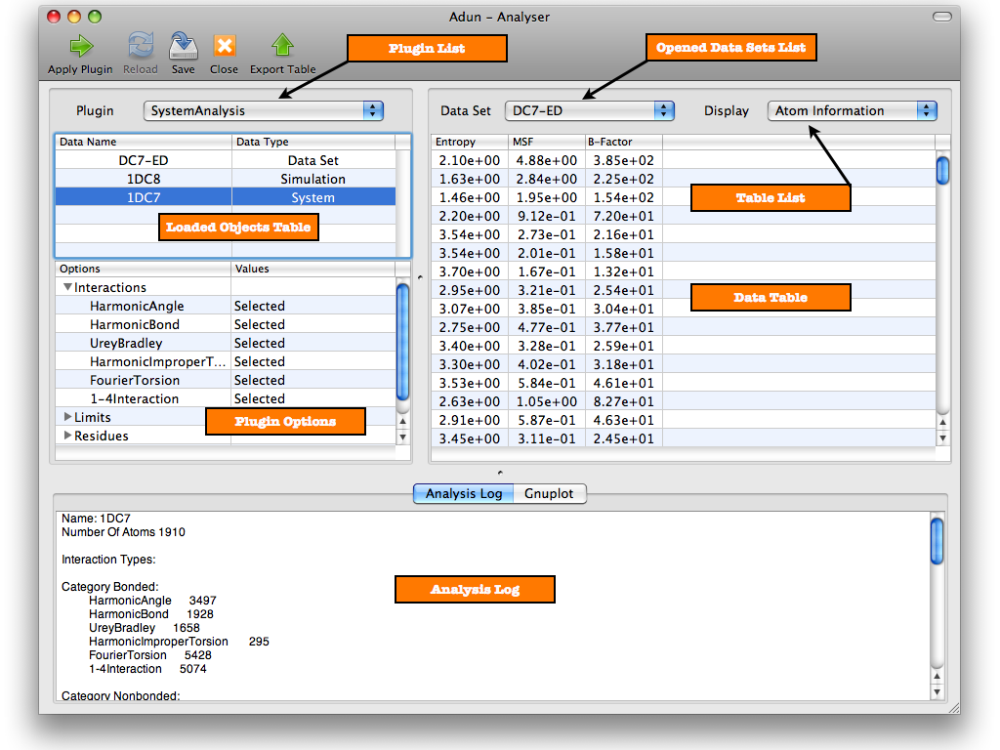

The Analyser
As its name suggests the Analyser is where all data analysis takes place. The Analyser shows what types of analysis can be done on a specific piece of data, displays the results of analysis and integrates gnuplot so you can plot the results. You can also save analysis data to the database, export it to a file, or even drag and drop it directly into Numbers on a Mac.
The screenshot shows the Analyser along with labels identifying the main interface elements. The 'Table List' lists the tables in the data set selected in the 'Opened Data Sets List'. The selected table is what appears in the 'Data Table'. Check the links below for more on using the analyser to process data.

See also
Using Analysis Plugins
Gnuplot Integration
Data Analysis Topics